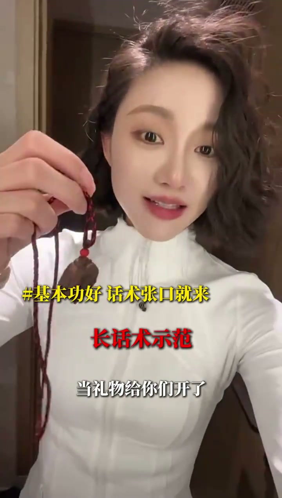

秘密：问自己十遍为什么
00:00全世界所有的产品我都能卖。秘密是什么？面对一块完全不懂的香牌（学生的一个藏品），不懂料子、不懂雕刻，我会问自己十遍为什么——我喜欢它，为什么？
[00:04] 面对不懂的产品：问自己十遍为什么——我喜欢它
Facing a product you don't get: ask yourself why ten times — “I like it”
为什么1：好看，让衣服有调性
00:24首先这条项链肯定得好看，搭配衣服好看，如果不好看是不可能戴它的。拿到手上那一刻就很想戴上去了，而且穿很多衣服都很搭。
00:33很普通的衣服搭上这块香牌，就变得很有调性。你穿西装搭了香牌，西装也有调性了。所以这一块真的能让你的衣服变得更有调性。
[00:32] 卖点1：好看，普通衣服搭上香牌就变得很有调性
Selling point 1: good looks — a plain outfit gains style with a fragrance plaque
为什么2：真有香味
00:44好看只是重点，重点是它真的有香味。戴的时候紧张了拿起来闻一闻、讲话卡壳（滑口）的时候闻一闻、无聊的时候闻一闻，香气直达，一口气通到底。
[00:48] 卖点2：真有香味——紧张、卡壳、无聊时闻一闻
Selling point 2: real fragrance — sniff it when nervous, stuck or bored
为什么3：材质与工艺
00:59我不是很专业，反正我听说它很厉害：它是由沉香、檀香、麝香、降真香等汇成的一种香，而且它的雕刻很漂亮。多了不说——有没有喜欢的？喜欢打个1吧。
[01:10] 卖点3：沉香等三种香汇成，雕刻漂亮；喜欢打个1
Selling point 3: a blend of three aromas including agarwood, beautifully carved; like it, type 1
促单与长短版切换
01:08促单钩子：当地我给你开了，拿5块出来，5块不卖——要的打1。看，就讲完了。
01:16核心方法：问自己为什么要买它，然后加个降价格、加互动、放钩子。那条话说得有点长，可以短一点——“这条漂亮吧？香料香牌不卖啊，当地给，要的打1”。
01:28这个讲解可以是长版本，也可以是短版本——这就叫基本功。

[01:26] 短版话术：这条漂亮吧？香料香牌不卖，当地给，要的打1
Short script: pretty, right? The spice plaque isn't sold — locals supply it. Want one? Type 1
问自己为什么要买它，然后加个降价格、加互动、就放钩子。讲解可以长版本，也可以短版本——这就叫基本功。